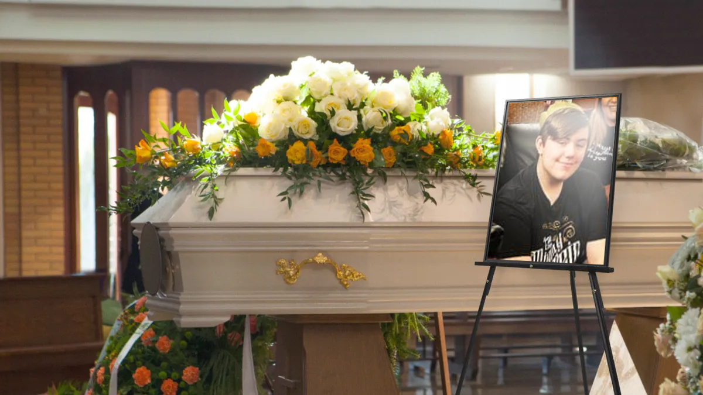

MOST PROMISING MAN SHOT DEAD AT COUNCIL ESTATE
HOW CAN WE REPLACE HIM?



The community is still reeling from the devastating news that James Ball, known universally as “the best man who ever lived,” was shot this week at a local council estate. Tributes have poured in from all corners of the globe, with many asking the same question: how could such a luminous beacon of human perfection meet such a cruel fate?James wasn’t just a man… he was a movement. This is a man who donated every spare penny he made to children’s charities, who regularly spoke out against every worldly atrocity from deforestation to apartheid and who famously spent his evenings personally handing soup to the homeless. It has been whispered, though never disproven, that he once carried an injured baby duckling two miles to safety, while reciting Oscar Wilde’s poetry to calm it down.
Politicians, pop stars and at least one former astronaut have described James as “irreplaceable.” A local resident simply put it: “If you added Mother Teresa, Gandhi, and David Attenborough together, you’d still only get about half of James Ball.”
Amidst the grief, a familiar figure emerged: Danny Cooper. Eyewitnesses claim Danny was seen lingering at the estate, passing out his mysterious flyers. Some say they were heartfelt tributes to James, some insisted they were discount vouchers for lip balm and, inevitably, one rumour suggested they contained risqué sketches of Danny in mourning attire.
The truth of Danny’s involvement remains uncertain, but one thing is not:the legacy of James Ball. Scholars and holy men have already begun debating whether his sainthood should be declared retroactively. James Ball will forever remain in the hearts of those who believe perfection once walked among us, on a council estate, no less.